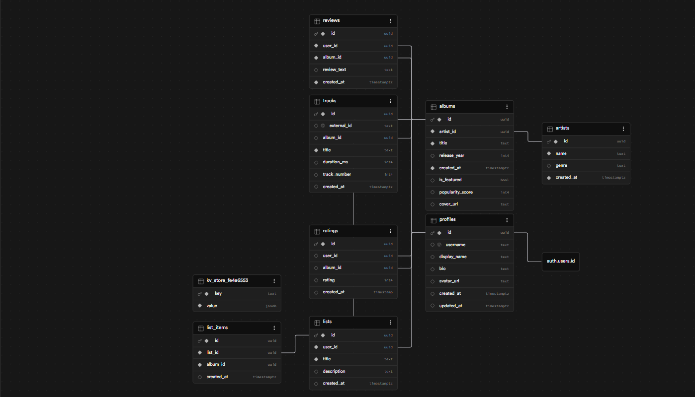
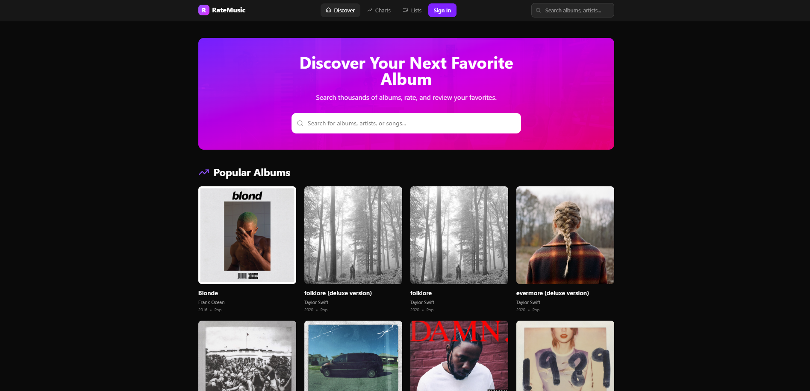
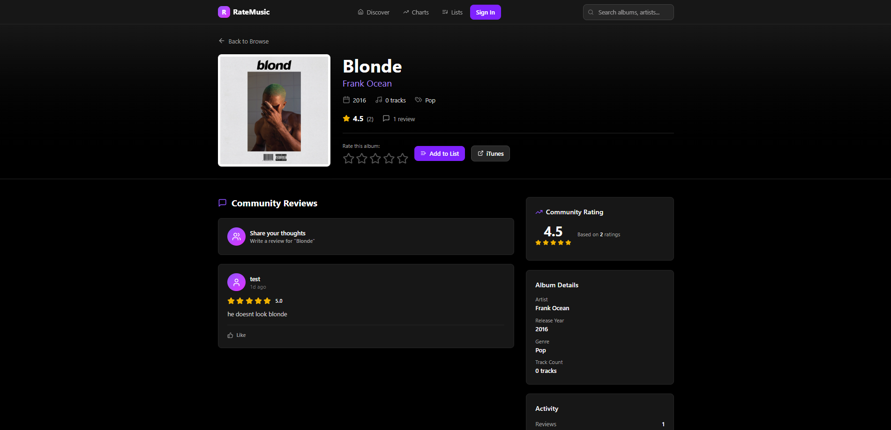
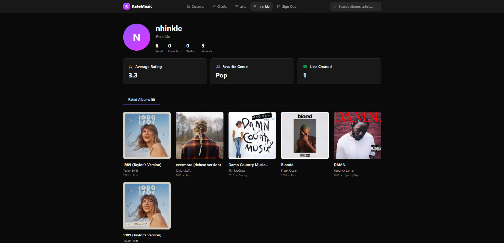

RateYourMusic Redesign
Full-Stack Music Rating Platform
RateYourMusic Redesign is a full-stack music rating platform built to improve how users discover albums, rate music, write reviews, and organize albums into lists. The project focuses on both user experience and database-backed functionality.
Project Demo
A walkthrough of the application and its core features.
System Design (Supabase)
The application is backed by a relational database built using Supabase. The schema was designed to support core platform features such as users, albums, artists, ratings, reviews, and custom lists.
The schema uses normalized relational tables with foreign key relationships connecting users, albums, artists, ratings, and reviews. Separate tables for ratings and reviews allow for more flexible querying, while list and list_items tables support many-to-many relationships for user-generated collections.

Database schema showing relationships between users, albums, artists, ratings, reviews, and lists.
Project Overview
This project redesigned the RateYourMusic experience by creating a cleaner interface and adding core music platform features such as user accounts, album browsing, ratings, reviews, and custom lists.
Core Features
Users can browse albums, view artist and album pages, rate albums, write reviews, and organize music into lists. The project also includes profile-based features and structured data relationships between users, albums, artists, ratings, and reviews.
My Contributions
My work focused on designing the database structure and integrating Supabase to handle authentication, data storage, and relationships between users, albums, and reviews. I also contributed to structuring how users interact with the platform and navigate between core features. On top of this I also contributed to creating and designing the application.
Tools Used
React, TypeScript, Supabase, JavaScript, HTML, CSS, and Vite.
User Interface
The interface was designed to simplify music discovery and interaction. Users can browse albums, view details, and interact with content through ratings, reviews, and lists.


